After completing this lesson, students will be able to
classify substances as elements, compounds and mixtures based on their chemical composition.
group mixtures as homogeneous and heterogeneous.
identify suitable method to separate components of a mixture.
classify solutions based on the size of the solute particles and compare the true solutions, colloids and suspensions based on their properties.
differentiate colloids based on the nature of dispersed phase and dispersion medium.
compare o/w and w/o emulsions.
discuss some important examples and uses of colloids.
We use the term matter to cover all substances and materials from which the universe is composed. Matter is everything around us. The air we breathe, the food we eat, the pen we write, clouds, stones, plants, animals, a drop of water or a grain of sand everything is matter. Samples of any of these materials have two properties in common. They have mass and they occupy space.
Figure 10.1 Examples to show Matter has mass image was given below
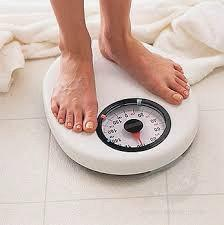
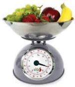
Figure 10.2 Examples to show Matter occupies space image was given below
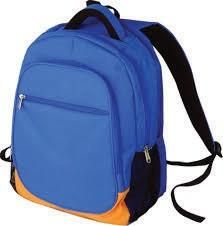
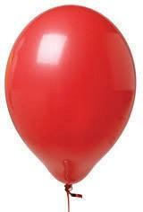
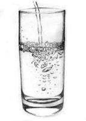
Thus, we say that matter is anything that has mass and occupies space.
In class 8, You have studied the classification of matter on the basis of their physical states. Now let us see how we can classify matter on the basis of chemical composition. Broadly speaking, it has been classified into pure substances and mixtures. From the point of view of chemistry, pure substances are those which contain only one kind of particles whereas impure substances Bracket OPEN mixtures bracket closed contain more than one kind of particles.
The flow chart given below will help us to understand the chemical classification of matter in detail.
Box item OPEN
Not all things that we see or feel are matter. For example, sunlight, sound, force and energy neither occupy space nor have any mass. They are not matter.box item ends
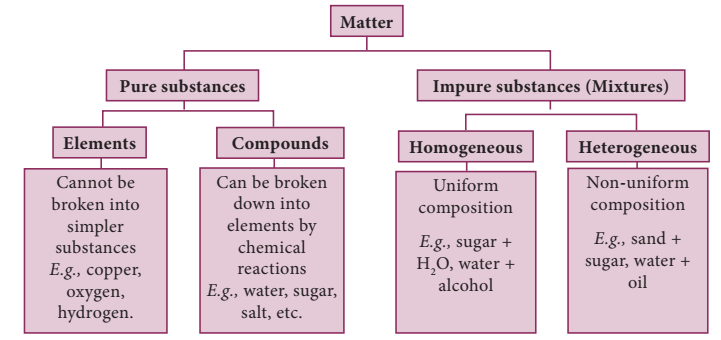
Box item open
1. Is air a pure substance or Mixture question mark Justify
2. You must have seen brass statues in museums and places of worship. Brass is an alloy made up of approx. 30 percent zinc and 70 percent copper. Is Brass a pure substance or a mixture or compound question mark box item ends
Most of you may be interested in music, and some of you may know how it is composed. Music is the combination of a few basic musical notes That is Saaa, Reee, Gaaa Thus, the building blocks of music are the musical notes
Saaa, Reee, Gaaa, Maaa, Paaa. |
Building blocks of music |
Likewise, all substances on earth are made up of certain simple substances called elements. Plants, cats, apples, rocks, cars and even our bodies contain elements. Thus, elements are the building block of all materials.
Box item open
In the modern periodic table there are 118 elements known to us, 92 of which are naturally occurring while the remaining 26 have been artificially created. But from these 118 elements, crores of compounds are formed-some naturally occurring and some artificial. Isn’t that amazing question mark box item ends
H, He, Li……. 118 elements |
Building block of all materials |
Robert boyle used the name element for any substance that cannot be broken down further, into a simpler substance. This definition can be extended to include the fact that each element is made up of only one kind of atom. For example, aluminium is an element which is made up of only aluminium atoms. It is not possible to obtain a simpler substance chemically from the aluminium atoms. You can only make more complicated substances from it, such as aluminium oxide, aluminium nitrate and aluminium sulphate.
Box item open
Atom: The smallest unit of an element which may or may not have an independent existence, but always takes part in a chemical reaction is called atom.
Molecules: The smallest unit of a pure substance, which always exists independently and can retain physical and chemical properties of that substance is called a molecule.
Examples: Hydrogen molecule consists of two hydrogen atoms Bracket OPEN H2 bracket closed
Water molecule consists of two hydrogen atoms Bracket OPEN H2 bracket closed and one oxygen atom Bracket OPEN O bracket closed. box item ends
All elements can be classified according to various properties. A simple way to do this is to classify them as metals, non metals and metalloids.
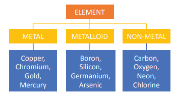
When two or more elements combine chemically to form a new substance, the new substance is called a compound. For example, cane sugar is made up of three elements carbon, hydrogen and oxygen. The chemical formula of cane sugar is C12H22O11. A compound has properties that are different from those of the elements from which it is made. Common salt, also known as sodium chloride, is a compound. It is added to give taste to our food. It is a compound made up of a metal, sodium and a non-metal, chlorine.
Box item open
Make models of the molecules of compounds by using match sticks and clay balls as shown below,
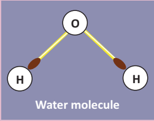
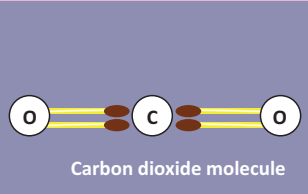
Box item ends
Box item open
Compounds of phosphorous, nitrogen and potassium are used in fertilizers. Silicon compounds are of immense importance in the computer industry. Compounds of fluorine are used in our toothpastes as they strengthen our teeth. Box item ends
Table 10.1 Difference between elements and compounds.
Element |
Compound |
Made up of only one kind of atom. |
Made up of more than one kind of atom. |
The smallest particle that retains all its properties is an atom. |
The smallest particle that retains all its properties is the molecule. |
Cannot be broken down into simpler substances. |
Can be broken down into elements by chemical methods. |
A mixture is an impure substance. It contains two or more kinds of elements or compounds or both physically mixed together in any ratio.For example, tap water is a mixture of water and some dissolved salts. Lemonade is a mixture of lemon juice, sugar and water. Air is a mixture of nitrogen, oxygen, carbon dioxide, water vapour and other gases. Soil is a mixture of clay, sand and various salts. Milk, ice cream, rock salt, tea, smoke, wood, sea water, blood, tooth paste and paint are some other examples of mixtures. Alloys are mixtures of metals.
Figure 10.3 Mixtures image was given below
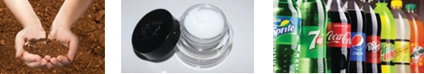
Image was given below
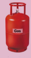
LPG – Liquefied Petroleum Gas
It is highly inflammable hydrocarbon gas. It contains mixture of butane and propane gases. LPG, liquefied through pressurisation, is used for heating, cooking, auto fuel excetra . box item ends
There are differences between compounds and mixtures. This can be shown by the following activity
Box item open
Take some powdered iron filings and mix it with sulphur.
1. Divide the mixture into two equal halves.
2. Keep the first half of the mixture as it is, but heat the second half of the mixture.
3. On heating you will get a black brittle compound.
Image of mixture of iron and sulphur and iron sulphide compound was given below
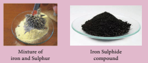
Box item ends
The black compound is Iron Bracket OPEN 2 bracket closed sulphide.
Iron plus sulphur on heating gives Iron sulphide
The Iron sulphide formed has totally different properties to the mixture of iron and sulphur as tabulated below:
Substance |
Appearance |
Effect of magnet |
Iron Bracket OPEN element bracket closed |
Dark grey powder |
Attracted to it |
Sulphur Bracket OPEN element bracket closed |
Yellow powder |
None |
Iron plus Sulphur Bracket OPEN Mixture bracket closed |
Dirty yellow powder |
Iron powder attracted to it |
Iron sulphide Bracket OPEN compound bracket closed |
Black solid |
No effect |
From the above experiment, we can summarise the major differences between mixtures and compounds
Box item open
Blood is not a pure substance. It is a mixture of various components such as platelets, red and white blood corpuscles and plasma. box item ends
Table 10.2 Difference between mixtures and compounds.
Mixture |
Compound |
It contains two or more substances |
It is a single substance |
The constituent may be present in any proportion. |
The constituents are present in definite proportions. |
They show the properties of their constituents. |
They do not show the properties of the constituent elements. |
The components may be separated easily by physical methods. |
The constituents can only be separated by one or more chemical reactions. |
Box item
Identify whether the given substance is mixture or compound and justify your answer.1.Sand and water 2.Sand and iron filings 3. Concrete 4. Water and oil 5. Salad 6. Water 7. Carbon dioxide 8. Cement 9. Alcohol.
box item ends
Most of the substances that we use in our daily life are mixtures. In some we will be able to see the components with our naked eyes but in most others the different components are not visible. Based on this mixture can be classified as below
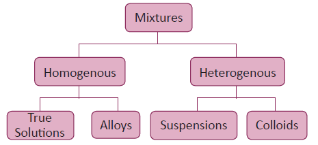
A mixture in which the components cannot be seen separately is called a homogeneous mixture. It has a uniform composition and every part of the mixture has the same properties. Tap water, milk, air, ice cream, sugar syrup, ink, steel, bronze and salt solution Bracket OPEN Figure 10.4 a bracket closed are homogeneous mixtures.
A mixture in which the components can be seen separately is called a heterogeneous mixture. It does not have a uniform composition and properties. Soil, a mixture of iodine and common salt, a mixture of sugar and sand, a mixture of oil and water, a mixture of sulphur and iron filings and a mixture of milk and cereals Bracket OPEN Figure 10.4 b bracket closed are heterogeneous mixture.
Figure 10.4 Bracket OPEN a bracket closed Homogeneous and Bracket OPEN b bracket closed Heterogeneous mixture image was given below
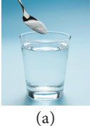
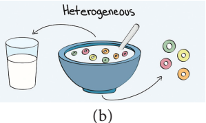
Figure 10.4 Bracket OPEN a bracket closed Homogeneous and Bracket OPEN b bracket closed Heterogeneous mixture
Many mixtures contain useful substances mixed with unwanted material. In order to obtain these useful substances, chemists often have to separate them from the impurities. The choice of a particular method to separate components of a mixture will depend on the properties of the components of the mixture as well as their physical states Bracket OPEN as shown in Table 10.3 bracket closed.
Certain solid substances when heated change directly from solid to gaseous state without attaining liquid state. The vapours when cooled give back the solid substance. This process is known as sublimation. Examples: Iodine, camphor, ammonium chloride etc.,
Figure 10.5 Sublimation image was given below
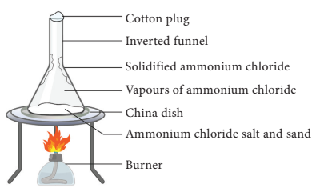
The powdered mixture of Ammonium chloride and sand is taken in a china dish and covered with a perforated asbestos sheet. An inverted funnel is placed over the asbestos sheet as shown in Figure 10.5. The open end of the stem of the funnel is closed using cotton wool and the china dish is heated. The pure vapours of the volatile solid pass through the holes in the asbestos sheet and condense on the inner sides of the funnel. The non-volatile impurities remain in the china dish.
BOX ITEM OPEN
The air freshners are used in toilets. The solid slowly sublimes and releases the pleasant smell in the toilet over a certain period of time. Moth balls, made of naphthalene are used to drive away moths and some other insects. These also sublime over time. Camphor, is a substance used in Indian household. It sublimes to give a pleasant smell and is sometimes used as a freshner. box item ends
Table 10.3 Methods of separating substances from mixtures
Type of mixtures
|
Mixtures |
Methods of separation |
Heterogeneous |
Solid and solid |
Handpicking, sieving, winnowing, magnetic separation, sublimation. |
Insoluble solid and liquid |
Sedimentation and decantation,loading, filtration, centrifugation |
|
Two immiscible liquids |
Decantation, solvent extraction |
|
Homogeneous |
Soluble solid and liquid |
Evaporation, distillation, crystallisation |
Two miscible liquids |
Fractional distillation |
|
Solution of two or more solids in a liquid |
Chromatography |
Centrifugation is the process by which fine insoluble solids from a solid- liquid mixture can be separated in a machine called a centrifuge. A centrifuge rotates at a very high speed. On being rotated by centrifugal force, the heavier solid particles move down and the lighter liquid remains at the top.
Figure 10.6 Centrifugation image was given below
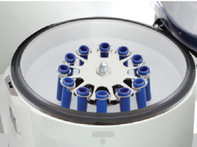
In milk diaries, centrifugation is used to separate cream from milk. In washing machines, this principle is used to squeeze out water from wet clothes. Centrifugation is also used in pathological laboratories to separate blood cells from a blood sample.
Two immiscible liquids can be separated by solvent extraction method. This method works on the principle of difference in solubility of two immiscible liquids in a suitable solvent. For example, mixture of water and oil can be separated using a separating funnel. Solvent extraction method is used in pharmaceutical and petroleum industries.
Figure 10.7 Solvent extraction image was given below
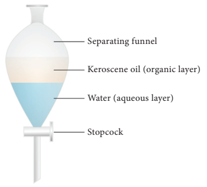
Box item open
Solvent extraction is an old practice done for years. It is the main process in perfume
development and it is also used to obtain dyes from various sources. box item ends
Distillation is a process of obtaining pure liquid from a solution. It is actually a combination of evaporation and condensation That is, Distillation = Evaporation plus Condensation
In this method, a solution is heated in order to vapourise the liquid. The vapours of the liquid on cooling, condense into pure liquid. For example, sea water in many countries is converted into drinking water by distillation. This method is also used to separate two liquids whose boiling points differ more than 25 K
A distillation flask is fixed with a water condenser. A thermometer is introduced into the distillation flask through an one-holed stopper. The bulb of the thermometer should be slightly below the side tube.
Figure 10.8 Solvent extraction image was given below
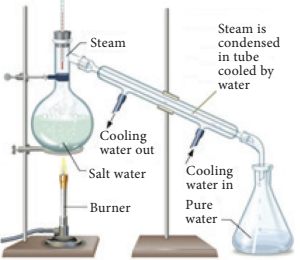
The brackish water Bracket OPEN sea water bracket closed to be distilled is taken in the distillation flask and heated for boiling. The pure water vapour passes through the inner tube of the condenser. The vapours on cooling condense into pure water Bracket OPEN distillate bracket closed and are collected in a receiver.The salt are left behind in the flask as a residue.
To separate two or more miscible liquids which do not differ much in their boiling points Bracket OPEN difference in boiling points is less than 25 K bracket closed fractional distillation is employed.
Fractional distillation is used in petrochemical industry to obtain different fractions of petroleum, to separate the different gases from air, to distill alcohols etc
Figure 10.9 Fractional distillation image was given below
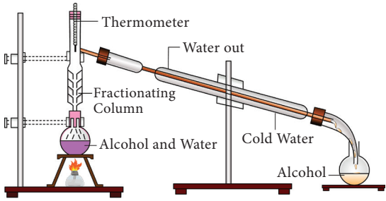
Before we discuss the technique we will take a look at the difference between the two important terms: Absorption and Adsorption
Adsorption is the process in which the particles of a substance is concentrated only at the surface of another substance.
Absorption is the process in which the substance is uniformly distributed throughout the bulk of another substance.
For example, when a chalk stick is dipped in ink, the surface retains the colour of the ink due to adsorption of coloured molecules while the solvent of the ink goes deeper into the stick due to absorption. Hence, on breaking the chalk stick, it is found to be white from inside.
Chromatography is also a separation technique. It is used to separate different components of a mixture based on their different solubilities in the same solvent. There are several types of chromatography based on the above basic principles. The simplest type is paper chromatography.
Figure 10.10 Paper chromatography image was given below
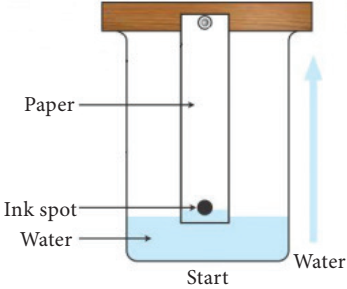
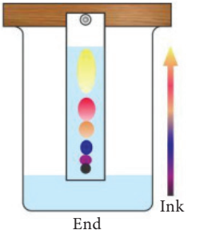
This method is used to separate the different coloured dyes in a sample of ink. A spot of the ink Bracket OPEN Example black ink bracket closed is put on to a piece of chromatography paper. This paper is then set in a suitable solvent as shown in figure 10.10. The black ink separates into its constituent dyes. As the solvent moves up the paper, the dyes are carried with it and begin to separate. They separate because they have different solubility in the solvent and are adsorbed to different extents by the chromatography paper. The chromatogram shows that the black ink contains three dyes.
A solution is a homogeneous mixture of two or more substances. In a solution, the component present in lesser amount by weight is called solute and the component present in larger amount by weight is called solvent.
In short, a solution can be represented as follows:
solute plus solvent gives solution
Example: salt plus water gives salt solution
Based on the particle size of the solute, the solutions are divided into three types. Let us study them through an activity.
BOX ITEM OPEN
Take bottles containing sugar, starch and wheat flour. Add one tea spoon full of each one to a glass of water and stir well. Leave it aside for about ten minutes. What do you observe question mark Image was given below
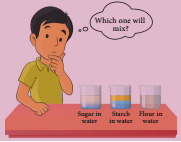
box item ends
We can see that in the case of sugar we get a clear solution and the particles never settle down. This mixture is called as true solution. In the case of starch and water we get a cloudy mixture. This mixture is called as colloidial solution In the case of wheat flour mixed with water we get a very turbid mixture and fine particles slowly settle down at the bottom after some time. This mixture is called as suspension.
Box item open
What are the differences among True solutions, colloids and suspensions question mark The major difference is the particle size of the solute. In fact interconversions of these mixtures are possible by varying the particle sizes by certain chemical and physical methods
Different Solutions image was given below
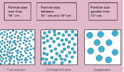
Box item ends
A colloidal solution is a heterogeneous system consisting of the dispersed phase and the dispersion medium. Dispersed phase or the dispersion medium can be a solid, or liquid or gas. There are eight different combinations possible Bracket OPEN Table 10.4 bracket closed. The combination of gas in gas is not possible because gas in gas always forms a true solution.
When colloidal solution are viewed under powerful microscope, it can be seen that colloidal particles are moving constantly and rapidly in zig-zag directions. The Brownian movement of colloidal particles is due to the unbalanced bombardment of the particles by the molecules of dispersion medium.
Figure 10.11 Brownian movement Image was given below
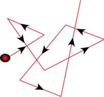
Tyndall Bracket OPEN 1869 bracket closed observed that when a strong beam of light is focused on a colloidal solution the path of the beam becomes visible. This phenomenon is known as Tyndall effect and the illuminated path is called Tyndall cone. This phenomenon is not observed in case of true solution
Box item open
The beam of light coming from headlights of vehicles is due to Tyndall effect. Blue colour of sky is also due to Tyndall effect. Box item ends
Table 10.4 Classification of colloids based on physical state of dispersed phase and dispersion medium
Serial number |
Dispersed Phase Bracket OPEN Solute bracket closed |
Dispersion Medium Bracket OPEN Solvent bracket closed |
Name |
Examples |
Serial number 1 |
Solid |
Solid |
Solid sol |
Alloys, gems, coloured glass |
Serial number 2 |
Solid |
Liquid |
Sol |
Paints, inks, egg white |
Serial number 3 |
Solid |
Gas |
Aerosol |
Smoke, dust |
Serial number 4 |
Liquid |
Solid |
Gel |
Curd, Cheese, jelly |
Serial number 5 |
Liquid |
Liquid |
Emulsion |
Milk, butter, oil in water |
Serial number 6 |
Liquid |
Gas |
Aerosol |
Mist, fog, clouds |
Serial number 7 |
Gas |
Solid |
Solid foam |
Cake, bread |
Serial number 8 |
Gas |
Liquid |
Foam |
Soap lather, Aerated water |
Differences between the types of solutions.
Property |
Suspension |
Colloidal sol. |
Solution |
Particle Size |
is greater than 100 nm |
1 to 100 nm |
Is less than 1nm |
Filtration separation |
Possible |
Impossible |
Impossible |
Settling of particles |
Settle on their own |
Settle on centrifugation |
Do not Settle |
Appearance |
Opaque |
Translucent Bracket OPEN or bracket closed Semi transparent |
Transparent |
Scatterting of light |
Does not penetrate |
Scatters |
Does not Scatter |
Diffusion of particles |
Do not diffuse |
Diffuse Slowly |
Diffuse rapidly |
Brownian movement |
May show |
Shows |
Does not Show |
Nature |
Heterogeneous |
Heterogeneous |
Homogeneous |
Figure 10.12 Tyndall effect image was given below
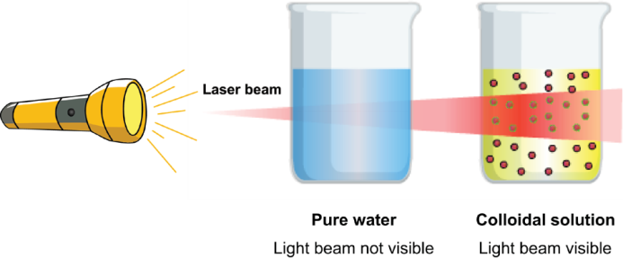
Box item open
1. Why whole milk is white question mark
2. Why ocean is blue question mark
3. Why sun looks yellow when it is really not question mark
Box item ends
An emulsion is a colloid of two or more immiscible liquids where one liquid is dispersed in another liquid. This means one type of liquid particles get scattered in another liquid. In other words, an emulsion is a special type of mixture made by combining two liquids that normally don’t mix. The word emulsion comes from the Latin word meaning “to milk” Bracket OPEN milk is one example of an emulsion of fat and water bracket closed. The process of turning a liquid mixture into an emulsion is called emulsification. Milk, butter, cream, egg yolk, paints, cough syrups, facial creams, pesticides etc. are some common examples of emulsions.
The two liquids mixed can form different types of emulsions. For example, oil and water can form an oil in water emulsion Bracket OPEN O/W-Example cream bracket closed, where the oil droplets are dispersed in water, or they can form a water in oil emulsion Bracket OPEN W/O-Example butter bracket closed, with water dispersed in oil.
Figure 10.13 Emulsions image was given below
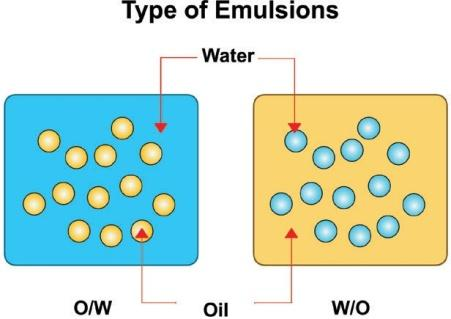
Emulsions find wide applications in food processing, pharmaceuticals, metallurgy and many other important industries.
Box item open
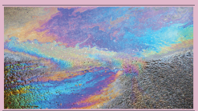
Have you seen colourful patches on a wet road question mark When oil drops in water on road, it floats over water and forms a colourful film. Find out why. Box item ends
Depending upon the chemical composition, matter is classified into elements, compounds and mixtures
Elements and compounds are considered to be pure substances as they contain only one kind of particles whereas mixtures contain more than one type of particles and they are considered as impure substances
In a homogenous mixture Bracket OPEN true solution bracket closed the components are uniformly mixed and it will have single phase
A heterogeneous mixture are not mixed thoroughly or uniformly and it will have more than single phase
Based on the size of the solute particles heterogeneous mixtures can be classified as colloidal solutions and suspensions
Elements A substance composed of atoms having an identical number of protons in each nucleus.
Compounds A pure, macroscopically homogeneous substance consisting of atoms or ions of two or more different elements in definite proportions.
Mixtures A composition of two or more substances that are not chemically combined with each other and are capable of being separated.
Solution Homogeneous mixture composed of two or more substances.
Colloid A system in which finely divided particles, which are approximately 1 to 100 nm in size, are dispersed within a continuous medium in a manner that prevents them from being filtered easily or settled rapidly.
Suspension A suspension is a heterogeneous mixture in which solute-like particles settle out of a solvent-like phase sometime after their introduction
Emulsion A colloid in which both phases are liquids: an oil-in-water emulsion. Absorption Process by which atoms, molecules, or ions enter a bulk phase Bracket OPEN liquid, gas, solid bracket closed
Adsorption Adhesion of atoms, ions or molecules from a gas, liquid or dissolved solid to a surface
Centrifugation Sedimentation of particles under the influence of the centrifugal force and it is used for separation of superfine suspensions.